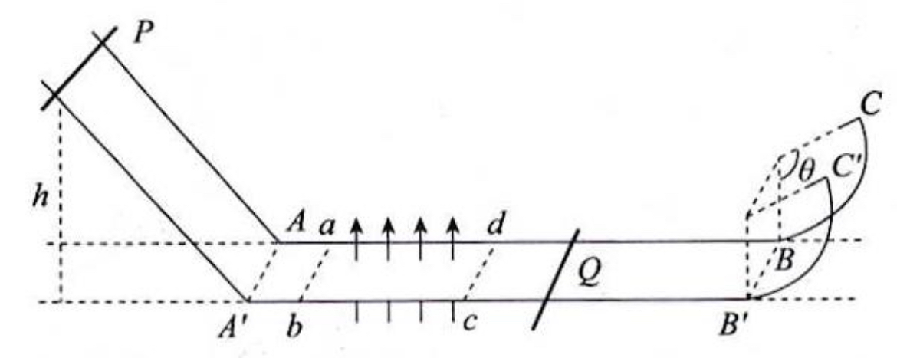
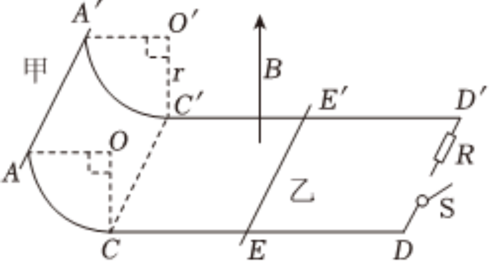
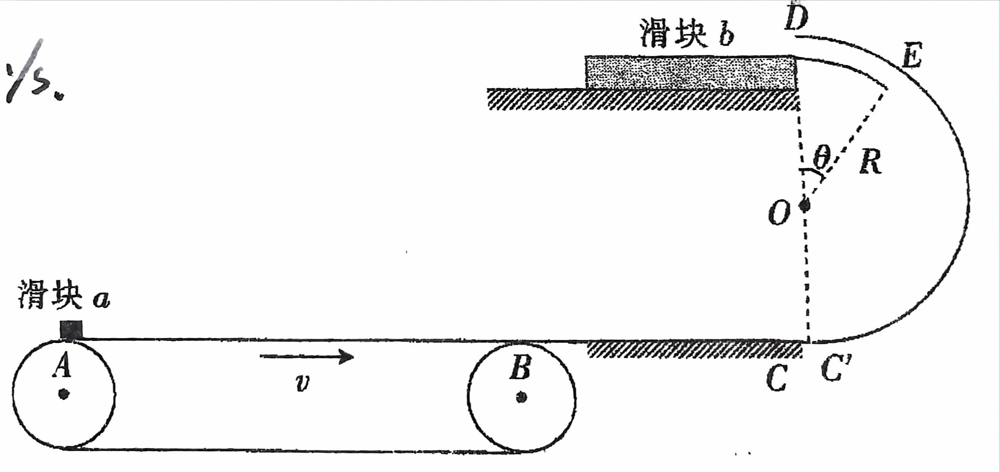

欢迎来到电磁感应的错题本，都是血汗呐~
电磁感应一般会在高考选择题中出现1~2题，并且在倒数第二道大题中如期出现，占据非常大的比分
而且通常综合能量和动量，有时结合运动学，在考题的灵活度上非常的高！
【下载】
正文开始：
T1:金考卷
如图所示，足够长的两平行光滑金属导轨固定在水平面上导轨间距为$L=1m$, 导轨水平部分的矩形区域abcd有竖直向上的匀强磁场，磁感应强度大小为$B=0.5T$, 导轨水平部分的左侧和倾斜部分由光滑圆弧连接，右侧和一光滑圆弧轨道平滑连接，圆弧轨道半径$r=\frac{16}{35}m$,圆心角$\theta =120^\circ$，在圆弧上端口有两弹性挡板C和C'。质量为$m_1=1kg$的金属棒P从离水平面高度$h=3.2m$处静止释放，经过AA'滑上水平轨道；P穿过磁场区域后，与另一根质量为$m_2=2kg$的静置在导轨上的金属棒Q发生弹性碰撞，碰后Q恰好能上升到C和C‘处，两金属棒的电阻值均为$R=0.2\Omega $,重力加速度$g=10m/s^2$，感应电流产生的磁场及导轨的电阻忽略不计，两根金属棒运动过程中始终与导轨垂直且接触良好。求：
（1）P刚进入磁场时收到的安培力F的大小；
（2）矩形磁场沿导轨方向的长度
（3）若Q从右侧圆弧滑下时，P已经从磁场中滑出，求P从开始运动到PQ第二次碰撞，Q棒上产生的焦耳热：

【解析】：
(1)$\begin{cases}\frac{1}{2}mv_P^2-0=mgh\\F_B=\frac{B^2L^2 v_P}{2R}\end{cases}\Longrightarrow \begin{cases}v_P=8m/s\\F_B=\color{red}{5N}\end{cases}$
(2)$\begin{cases}F_N=\sin 30^\circ m_2g\\F_N=m_2 \frac{v_c^2}{R}\\\frac{1}{2}m_2v_c^2-\frac{1}{2}m_2v_2^2=-\frac{1}{2}m_2gh\\v_2=\frac{2m_1}{m_1+m_2}v_1\\mv_1-mv_P=-\frac{B^2L^2\overline{v}}{2R}\Delta t\end{cases} \Longrightarrow\begin{cases}v_c=\frac{4}{7}\sqrt{7}m/s\\v_2=4m/s\\v_1=6m/s\\x=\overline{v}\Delta t=\color{red}{3.2m}\end{cases}$
(3)$v_{Q返}=v_2=4m/s$
$P最终 : m_1v_{P终}-m_1v_1'=-\frac{B^2L^2x}{2R}\Longrightarrow v_{P终}=0m/s\Longrightarrow 停在ab处$
$Q最终：m_2v_{Q终}-m_2v_{Q返}=-\frac{B^2L^2x}{2R}\Longrightarrow v_{Q终}=3m/s$
$\frac{1}{2}m_1v_{P终}^2+\frac{1}{2}m_2v_{P终}^2-\frac{1}{2}m_1v_P^2=-Q\Longrightarrow Q=23J$
$\therefore Q_Q=\frac{1}{2}Q=\color{red}{\frac{23}{2}J}$
T2:金考卷
如图所示，间距为L的平行光滑金属导轨CD-C'D'固定在同一水平面上，左侧与竖直平面内半径为r的$\frac{1}{4}$光滑圆弧轨道AC-A'C'相连，水平导轨与圆弧轨道相切，DD'接阻值为R的电阻，开关S断开。水平导轨内有竖直向上的匀强磁场，磁感应强度大小为B，导体棒乙静止于EE'处。导体棒甲从AA'处由静止释放，甲棒进入磁场后与乙棒相遇时，两棒速度刚好相等。两棒质量均为m，电阻均为R，运行过程中始终与导轨垂直，水平导轨足够长且电阻不计，重力加速度大小为g。求：
（1）甲、乙相遇时，甲棒上产生的热量$Q_1$
（2）乙棒的初始位置EE'离磁场边界CC'的距离x
（3）甲、乙相遇瞬间闭合开关S，在之后的运动过程中，电阻R上产生的热量$Q_2$

【解析】：
（1）$\begin{cases}\frac{1}{2}mv_c^2=mgr\\mv_c=2mv_共\\\begin{cases}\frac{1}{2}\times 2mv_共^2-\frac{1}{2}mv_c^2=-Q\\Q_1=\frac{1}{2}Q\end{cases}\end{cases} \Longrightarrow\begin{cases}v_c=\sqrt{2gr}\\c_共=\sqrt{\frac{gr}{2}}\\Q=\frac{1}{2}mgr\\Q_1=\color{red}{\frac{1}{4}mgr}\end{cases}$
（2）$-B\overline{I}L\Delta t=mv_共-mv_c$
$\begin{cases}B\overline{I}L\Delta t=mv_共-0\\\overline{I}t=\frac{BL\overline{v_a}-BL\overline{v_b}}{R+R}\Delta t\end{cases}$
$\overline{x}=\overline{v_a}\Delta t-\overline{v_b}\Delta t=\color{red}{\frac{mR\sqrt{2gr}}{B^2L^2}}$
（3）$\begin{cases}\frac{1}{2}(2m)v_共^2=Q\\Q_R=\frac{2}{3}Q\end{cases}\Longrightarrow \begin{cases}Q=\frac{1}{2}mgr\\Q_R=\color{red}{\frac{1}{3}mgr}\end{cases}$
T3:5月考
某装置竖直截面如图所示，长度$l_1=5m$的水平传送带AB在右端B点平滑连接着一长为$l_2=2.5m$的水平轨道BC及一半径R=1m的光滑半圆弧轨道C'ED，其中C'点为半圆轨道的最低点，ED段为光滑圆管，$\angle EOD=\theta=37^\circ$。在轨道的末端D的左端光滑的水平面上紧靠着质量为M，长为$l_3=5m$的滑块b，其上表面与轨道水平面平齐。物块与传送带、水平轨道BC，滑块b之间的动摩擦因数分别为$\mu _1=0.5、\mu _2 =0.1、\mu _3=0.2$，其他轨道均光滑。质量为m的可视为质点的小物块a在传送带A端静止释放。已知：$m=1kg、M=2kg$
（1）若传送带以$v=5m/s$的速度顺时针运动，求小物块a
①第一次到达C'位置的向心加速度大小
②停止运动时距离B位置的距离
（2）若小物块恰好能过D位置，求传送带的最小运行速度。
（3）若改变传送带的速度，使小物块a能滑上滑块b，求滑块至少多长才能保证小物块一定不会脱离滑块b。

【解析】：
（1）$\begin{cases}ma=\mu_1mg\\v^2=2al_1\end{cases}\Longrightarrow \begin{cases}a=5m/s^2\\v=5\sqrt{2}m/s>5m/s\end{cases}\Longrightarrow v_B=5m/s$
$\begin{cases}ma_2=\mu_2m_2g\\v_c^2-v_B^2=2(-a_2)l_2\end{cases}\Longrightarrow\begin{cases}a_2=-1m/s^2\\v_c=2\sqrt{5}m/s\end{cases}$
$①ma=m\frac{v_c^2}{R}\Longrightarrow a=20m/s^2$
$判断：\frac{1}{2}mv_c^2=mgh\Longrightarrow h=1m=R \therefore 小球最多达到圆心等高处，不会脱离轨道$
$②\frac{1}{2}mv_c^2 < mg2R \therefore 以v_c'=2\sqrt{5}m/s 的速度返回$
$v_B'^2-v_c'^2=2\mu_2gl_2\Longrightarrow v_B'=\sqrt{15}m/s$
$\therefore 每次经过BC，都会少\sqrt{5}的速度\therefore v_B'=2\sqrt{5}m/s=\sqrt{4\times 5}\therefore 可以在BC上滑4趟$
$\therefore$停止在C点 $\therefore$距离B $\color{red}{2.5m}$
（2）$判断：\begin{cases}恰好过D：v_D=0\Longrightarrow -\frac{1}{2}mv_c^2=-mg2R \Longrightarrow v_{c_{min}}=\sqrt{40}m/s\\恰好过E：\begin{cases}0+mg\cos\theta=m\frac{v_E^2}{R}\\\frac{1}{2}mv_E^2-\frac{1}{2}mv_c^2=-mg(R+R\cos\theta)\end{cases}\Longrightarrow v_c=\sqrt{44}m/s\end{cases}$
$\because v_c>v_{c_{min}}\therefore优先保证经过E$
$v_B^2-v_c^2=2\mu _2gl_2\Longrightarrow v_B=7m/s$
$判断：v_B^2=a\mu_1gl_1 \Longrightarrow l_1=4.9m<5m\therefore 传送带足够长 \therefore 最小运行速度为\color{red}{7m/s}$
（3）$v_{B_{max}}=\sqrt{2\mu_1gl_1}=5\sqrt{2}m/s \therefore v_c=\sqrt{45}m/s$
$\therefore\frac{1}{2}mv_D^2-\frac{1}{2}mv_c^2=-mg2R\Longrightarrow v_c=\sqrt{5}m/s$
$\begin{cases}mv_D=(m+M)v_共\\\begin{cases}a_3=\mu_3g\\a_b=1m/s^2\\t=\frac{v_D}{a_物+a_b}\end{cases}\\x=\frac{1}{2}v_Dt\end{cases}\Longrightarrow\begin{cases}v_共=\frac{\sqrt{5}}{3}m/s\\t=\frac{\sqrt{5}}{3}s\\x=\frac{5}{6}m\end{cases}$
$\therefore 滑块至少\color{red}{\frac{5}{6}m}$